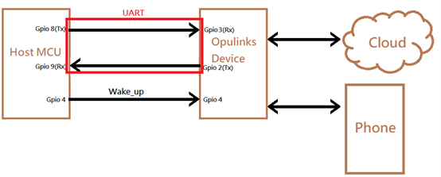
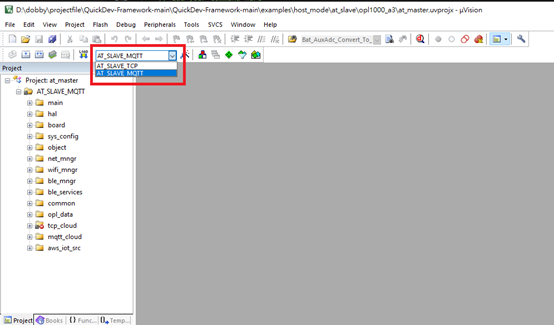
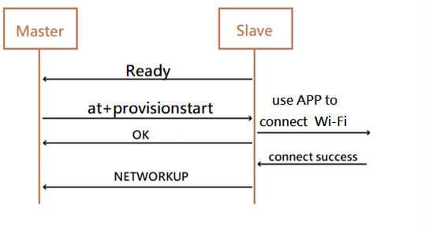
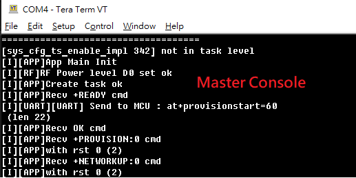
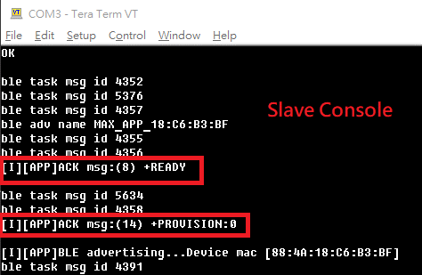
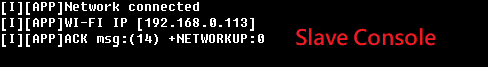
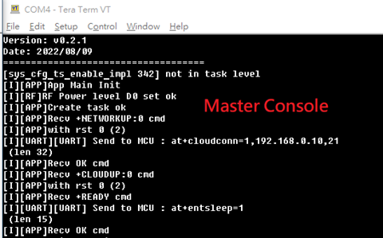
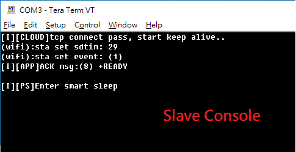
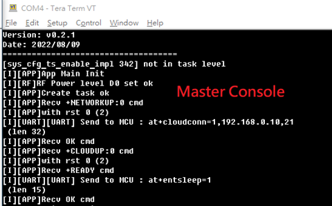
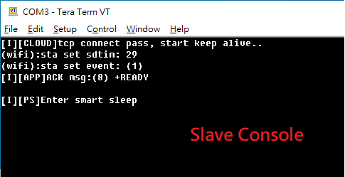

Host mode example
In this host_mode example, the Opulinks device plays as a slave device controlled by another host MCU. The host MCU will send AT command through UART to request Opulinks device to perform WiFi provision, cloud connection, cloud data sending and receiving. The example application located at “examples\host_mode\at_master”(to simulate host MCU) and “examples\host_mode\at_slave” (Opulinks slave device).
Architecture
WThe Host MCU send request to Opulinks device via UART interface, also a wakeup PIN.

Binary Build
To setup this demonstration, user must build master and slave binaries separately. There are two kind of cloud server to test, TCP and MQTT. Following screen shot illustrates how to select project with correct server type to build slave binary in MDK-ARM IDE tool. Also do the same to build the correct mater binary.

To modify the server IP, find the TCP/MQTT IP setting in “APP_HostModeDemoProgress” of “examples\host_mode\at_master\app_main.c”
#if defined(HOST_MODE_TCP)
strcpy((char *)tHostModeReqCmdFmt.u8aPayload, "1,192.168.0.10,21");
#elif defined(HOST_MODE_MQTT)
strcpy((char *)tHostModeReqCmdFmt.u8aPayload, "1,broker.emqx.io,8883");
#endif
Scenarios
BLE/WiFi Provision
For the first time the host_mode environment has been setup, Master device will send at+provisionstart to Slave device after receiving “Ready”. After revceiving provision request in Slave device (see console), user can do WiFi setup on phone App. (Please refer to Start_up example for detail steps)
   
- Cloud connection and enter sleep
After Wi-Fi connected, Master device will send at+cloudconn to connect cloud. Once connected, Master device will send at+entsleep to ask Slave device to enter power save mode
TCP
 


